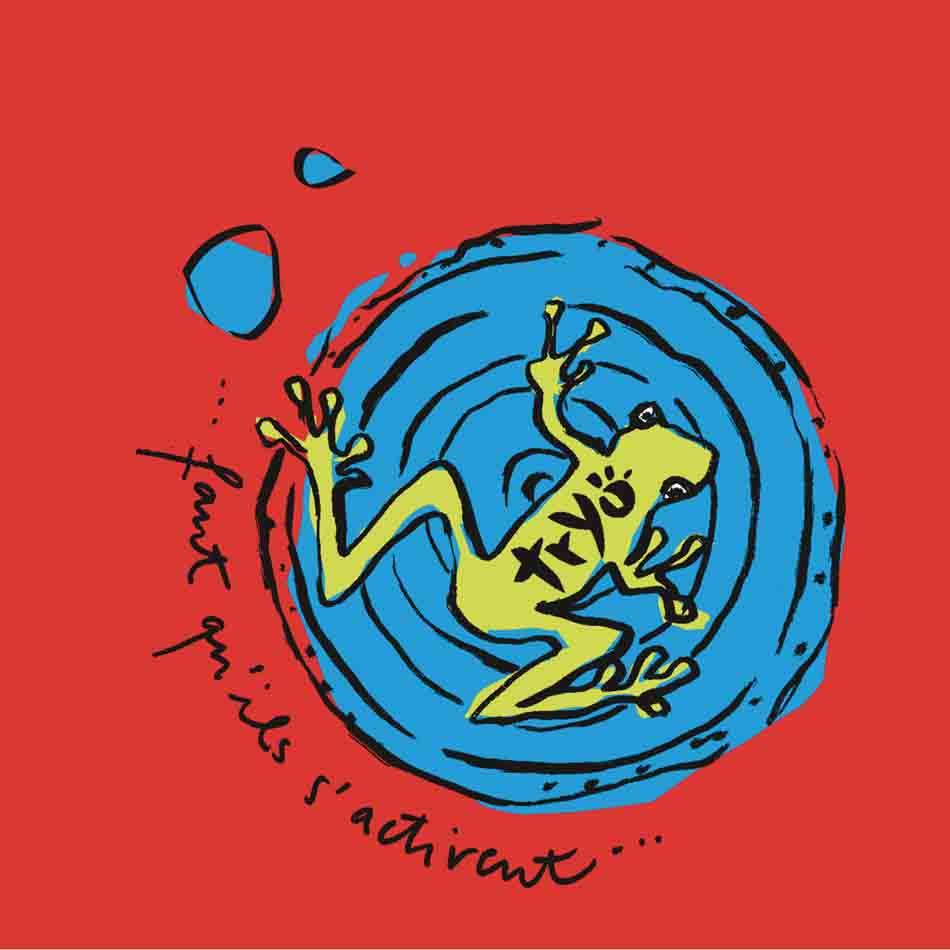

Daniel BRAVO

Biographie
Daniel Bravo, également dit Danielito ou Ito, est un musicien franco-chilien, né le 19 août 1973 à Santiago (Chili)
Percussionniste du groupe Tryo, il participe également au groupe Pause sur leur album ou lors de quelques concerts
Originaire du Chili, il vient d'une famille d'artistes : père cinéaste, frères musicien, photographe, compositeur et chef d'orchestre
Son premier instrument était le violon
Il a étudié les percussions au conservatoire de Bobigny avec Gérard Sraïki pendant huit ans,
et jouait avec une dizaine de groupes avant de rejoindre définitivement Tryo.
Galerie
Photos de Daniel BRAVO


Photos de Daniel BRAVO et son groupe les TRYOS


Photos de Daniel BRAVO et Daniel BRAVO le commentateur sportif

Quelques vidéos des Tryo
Discographie
La discographie de Tryo est un voyage musical riche et varié, où les percussions de Daniel Bravo jouent un rôle essentiel Si vous appréciez la musique engagée, mélodieuse et rythmée, vous serez forcément séduit par les albums de Tryo
-
 "Mamagubida"
"Mamagubida"
-  "faut quils sactivent"
- "grain de sable"
- "ladilafé"
- "vent debout"
DISCOGRAPHIE
La discographie de Tryo est un voyage musical riche et varié, où les percussions de Daniel Bravo jouent un rôle essentiel
Si vous appréciez la musique engagée, mélodieuse et rythmée, vous serez forcément séduit par les albums de Tryo
- Albums Mamagubida
- Albums faut quils sactivent
- albums grain de sable_
- albums ce que l'on sème
- Albums ladilafé
- Albums vent debout
- Albums chants de bataille
Liens officiels